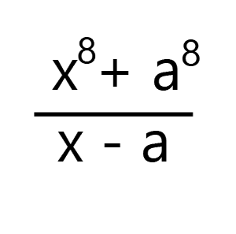

Los cocientes notables son aquellos cocientes de cuyo resultado se obtienen polinomios exactos, es decir que el resto es igual a cero
La factorización es una técnica que consiste en la descomposición de una expresión matemática en forma de producto.
Estilo teórico
Son aquellas divisiones exactas, es decir, de residuo cero que se puede obtener de forma directa sin resolver o realizar ningún tipo de división algebraica. Una división exacta es cuando su residuo es cero y tiene la forma general:
P(x) / Q(x)
La división no existe cuando x=a, pero si se toma este valor, podemos hallar el residuo de dicha división, sin necesidad de realizar ningún método, tan solo remplazamos este valor en p(x) y obtenemos el residuo R = p(a).
Ejemplo:
El residuo es:
El teorema del resto (o teorema del residuo) afirma que si dividimos un Polinomio P(x) por otro polinomio de primer grado de la forma x - a el residuo resulta ser R = p(a).
La división no existe cuando x=a, pero si se toma este valor, podemos hallar el residuo de dicha división, sin necesidad de realizar ningún método, tan solo remplazamos este valor en p(x) y obtenemos el residuo R = p(a).
Método a través del cual un polinomio se expresa en forma de multiplicación de factores, que pueden ser números, letras o ambos. Para factorizar se agrupan los factores que son comunes a los términos, y de esa forma se va descomponiendo el polinomio en varios polinomios.
La factorización es un método muy útil cuando se tienen expresiones algebraicas, porque se puede convertir en la multiplicación de varios términos sencillos.
Ejemplo:
2a 2 + 2ab=2a * (a + b)
Click aquí, para profundizar sobre factorización